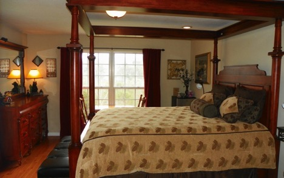
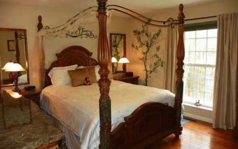

Rooms
The Guest House of our Buckeye Bed and Breakfast offers 4 guest rooms. Each room is furnished uniquely with reproductions of American 18th century and Shaker furniture hand-built by David T. Smith. These rooms have one or two queen-size beds, a full private bath, and air conditioning. Fireplaces and/or private porches in some of the rooms of this Ohio Amish Country inn help create the perfect setting for a romantic vacation. Many rooms also feature trundle beds. The Guest House also features a large gathering room with bookshelves filled with board games, jigsaw puzzles, and some of our favorite books.
Sweetheart Haven
Your romantic master suite is appointed with a spacious king size bed, and French doors which lead onto a second story balcony with intimate views of the Smoky Mountains. Your private bath is appointed with a marble double vanity, marble tile and jet tub.
Treetop
Your room has a queen size canopy four poster bed, hardwood flooring and window views of the surrounding hillsides. Your private bathroom is appointed with a marble vanity, shower/bathtub, and tile flooring with Smoky Mountain Black Bear decor throughout.
Enchantment

This spacious room, decorated with an enchanted forest theme, provides a generous four poster canopy queen size bed, hardwood flooring and overlooks the rose gardens. Your private bathroom includes a marble double vanity, bath/shower and tile flooring.
Out of Africa

Your room features a queen size bed, hardwood flooring, and it is decorated with images from the continent of Africa. Your private bath has marble vanity, shower/bath and tile flooring.
Policies
General Information
- Buckeye Bed and Breakfast maintains a totally NON-SMOKING environment.
- As we are an adult romantic getaway, the inn is not suitable for children under 15 years old.
- Buckeye is wheelchair accessible.
- The Inn closes for two short periods in early April and early November. Check our Availability Page for open dates during those months.
Deposit Policy
Reservations must be secured by deposit or credit card equal to one night’s lodging. We will process a deposit of at least one night’s stay — or 50% for stays of two or more nights. Cash, personal check, Traveler’s check, Master Card, Visa and Discover are accepted. Check-out at 11:00 am Check-in is at 3:00pm.
Cancellation Policy
With a notice of no less than 14 days, we will be pleased to refund your deposit less a processing fee of $30. For reservations cancelled less than 14 days prior, deposit will be refunded less fee provided the room is rebooked. You are responsible for the entire stay if you fail to show, depart early, or arrive after scheduled dates. Major holidays, fall foliage, and special events require a 30-day notification.
Pet Policy
Sorry, we love pets, but Reese the Cat will not allow other animals at the inn.